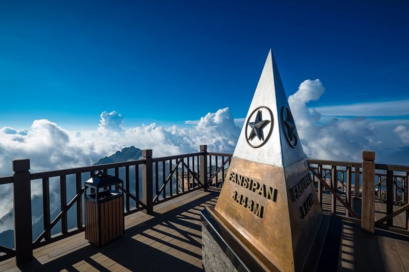
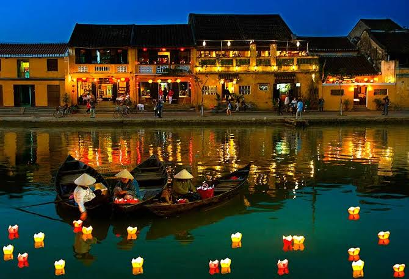
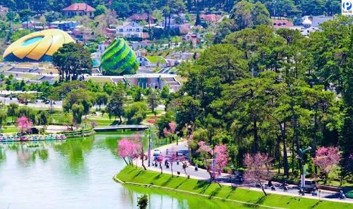

Khám Phá Các Vùng Đất Việt Nam
Đắm chìm vào hành trình chiêm ngưỡng non sông gấm vóc: từ những cung đường đèo hùng vĩ Tây Bắc, di sản cổ kính miền Trung trầm mặc, đến miền sông nước Cửu Long đượm phù sa.
Đắm chìm vào hành trình chiêm ngưỡng non sông gấm vóc: từ những cung đường đèo hùng vĩ Tây Bắc, di sản cổ kính miền Trung trầm mặc, đến miền sông nước Cửu Long đượm phù sa.
Việt Nam không chỉ nổi tiếng với cảnh quan thiên nhiên trác tuyệt mà còn là cái nôi của chiều dài lịch sử hàng ngàn năm văn hiến cùng nền ẩm thực phong phú bậc nhất thế giới.
Sở hữu ba phần tư là đồi núi xen lẫn những dải đồng bằng màu mỡ và hơn 3.260 km bờ biển nhiệt đới trong lành với làn nước xanh ngọc bích.
Hàng loạt di sản thiên nhiên và văn hóa được UNESCO công nhận như Quần thể danh thắng Tràng An, Cố đô Huế, Phố cổ Hội An, Thánh địa Mỹ Sơn.
Sự kết hợp tinh túy của gia vị thảo mộc bản địa, cân bằng âm dương và phong vị đặc trưng riêng biệt từ phở Hà Nội, bún bò Huế đến bánh xèo miền Tây.
Mỗi vùng miền mang một nhịp thở, một sắc thái văn hóa và vẻ đẹp thiên nhiên rất đỗi riêng biệt.

Văn hiến ngàn năm & Núi non hùng vĩ
Khám phá thủ đô Hà Nội ngàn năm văn hiến, non nước Tràng An huyền ảo và những cung đường đèo Tây Bắc quanh năm sương phủ mộng mơ.
Tìm hiểu thêm
Con đường di sản & Biển xanh cát trắng
Dải đất hẹp nép mình bên dãy Trường Sơn hùng vĩ, kết nối các cố đô trầm mặc, những hang động tráng lệ và bãi biển nắng vàng rực rỡ.
Tìm hiểu thêm
Sức sống phồn hoa & Thiên nhiên thơ mộng
Trải nghiệm sự tương phản đầy quyến rũ giữa đô thị Sài Gòn tràn đầy sức sống, cao nguyên hoa mộng mơ và miền tây sông nước hào sảng.
Tìm hiểu thêmNhững địa danh làm say lòng du khách trong nước và quốc tế bởi vẻ đẹp ngoạn mục khó quên.
Chinh phục đỉnh Fansipan - nóc nhà Đông Dương, ngắm thung lũng Mường Hoa bảng lảng trong sương sớm.
Trải nghiệm du thuyền ngắm hoàng hôn buông trên mặt biển biếc và thám hiểm các hang động thạch nhũ hàng triệu năm.
Tản bộ qua những con ngõ tường vàng hoa giấy rực rỡ, lắng nghe câu hò bài chòi và thả đèn hoa đăng lung linh.
Tận hưởng tiết trời se lạnh mát mẻ quanh năm, ngắm hồ Xuân Hương thơ mộng và dạo bước giữa những đồi thông ngút ngàn.
Để lại thông tin để nhận tư vấn lịch trình khám phá Việt Nam phù hợp nhất cho chuyến đi của bạn.
Đội ngũ tư vấn am hiểu sâu sắc từng cung đường, nét văn hóa bản địa luôn sẵn sàng hỗ trợ bạn kiến tạo những chuyến du ngoạn tuyệt vời nhất.